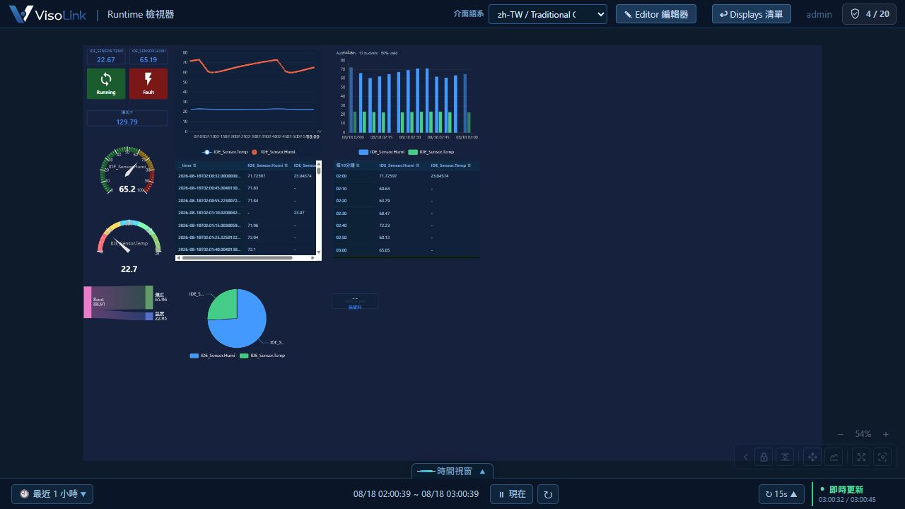
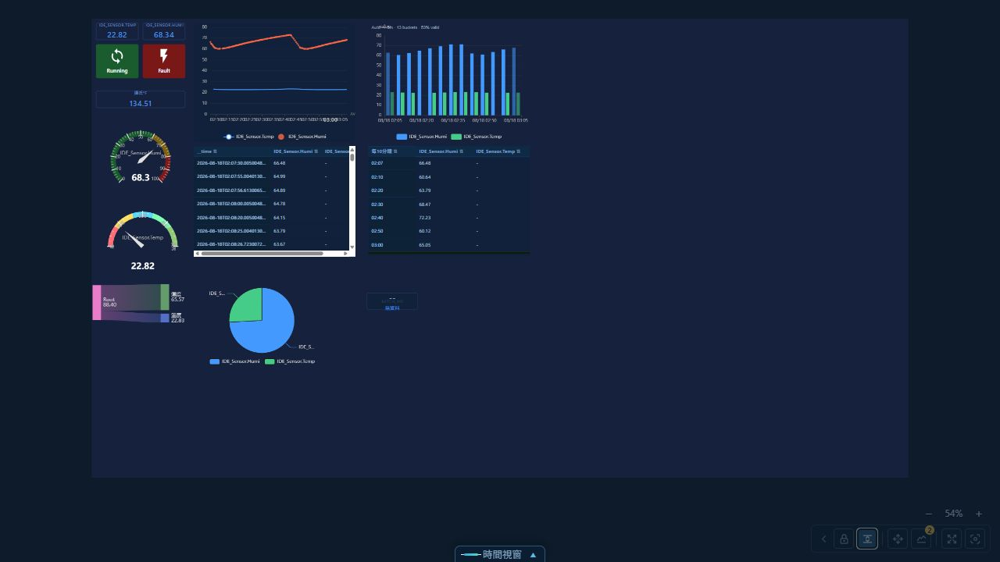
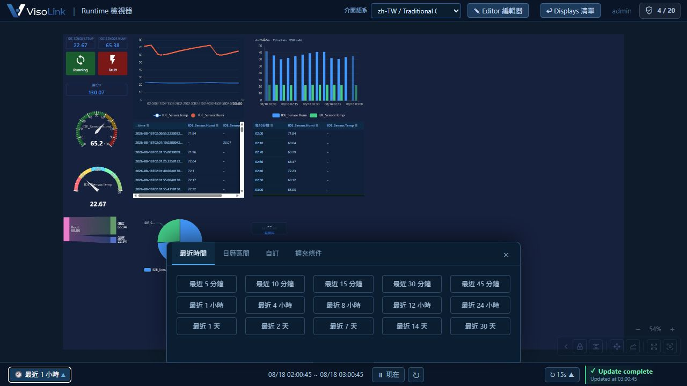
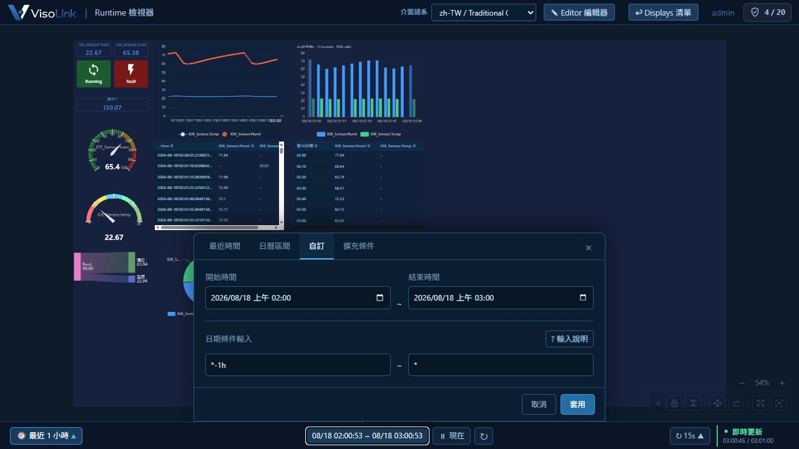
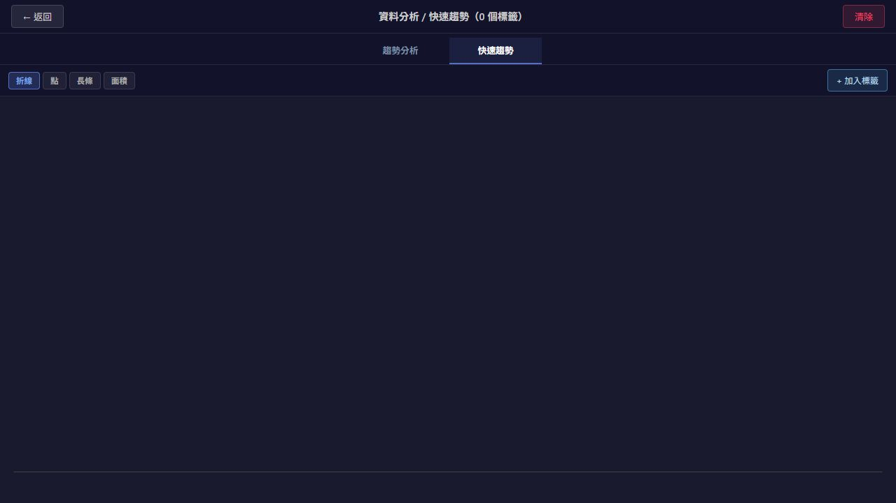
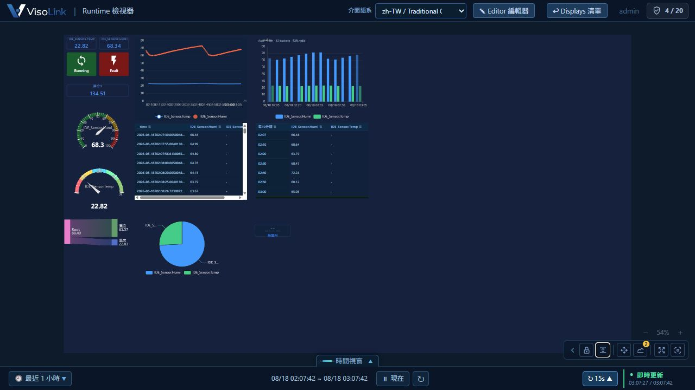
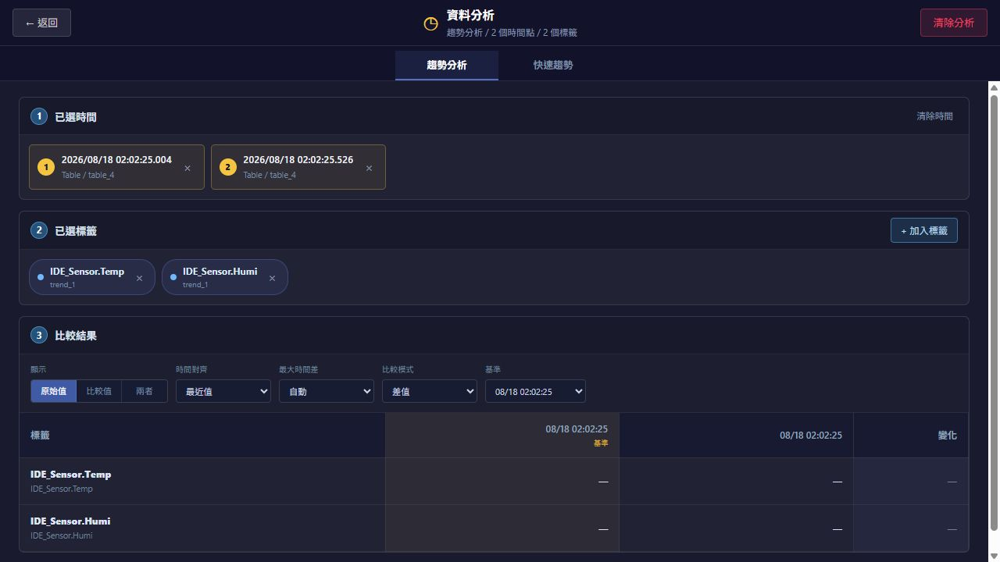

Runtime 即時監看
Runtime 將 Display 轉換為持續更新的監看畫面，並以同一個時間情境串連圖面、時間標記、Quick Trend 與 Data Analysis。
開啟 Runtime
從 Display Library 或 Studio 進入 Runtime，查看已儲存圖面的即時資料與互動功能。
- 進入 Display Library，找到要監看的 Display。
- 點選 Display 卡片或操作選單中的 Runtime。
- 也可以在 Studio 上方點選「▶ Runtime」。
- 等待畫布與資料載入完成。

看不到圖面或資料：先確認 Display 檢視權限、資料權限、圖面是否已儲存，以及所選時間範圍是否有資料。
認識 Runtime 畫面
Runtime 由上方導覽、中央圖面、浮動工具列與下方時間視窗組成。
| 區域 | 用途 |
|---|---|
| 上方導覽 | 切換介面語系、返回 Editor 或 Displays 清單，並查看授權使用狀況。 |
| 中央圖面 | 顯示 Value、Trend、Table、狀態及其他已配置元件。 |
| 浮動工具列 | 切換畫布操作、全畫面、Data Analysis、符合螢幕與符合物件。 |
| 時間視窗 | 控制全域時間範圍、即時／暫停、重新整理與自動更新頻率。 |
預期結果：所有使用全域時間情境的元件，會依下方同一個時間範圍取得資料。
顯示模式
顯示模式用來適應中控大屏、一般桌面及不同尺寸的顯示設備。

| 工具 | 用途 |
|---|---|
| Fixed canvas | 以固定畫布及捲動方式瀏覽內容。 |
| Full mode | 隱藏主要導覽區，讓圖面使用更多顯示空間；點選退出區或再次切換即可離開。 |
| 移動畫布 | 拖曳觀看目前未顯示的畫布區域。 |
| 符合螢幕 | 縮放整張畫布以符合可用視窗。 |
| 符合物件 | 依圖面中實際物件範圍調整縮放。 |
全域時間 Filter
全域時間 Filter 決定 Runtime 圖面與分析功能使用的共同時間情境。

- 點選下方目前的時間範圍，例如「最近 1 小時」。
- 在「最近時間」選擇 5 分鐘至 30 天等快捷範圍。
- 需要固定起訖時間時，切換「日曆區間」。
- 需要相對時間運算時，切換「自訂」，輸入開始與結束條件，例如
*-1h到*。 - 套用後確認下方顯示的實際起訖時間。
注意：改變全域時間會重新查詢相關元件；範圍愈長，畫面需要處理的資料量通常愈大。
互動式時間窗
時間視窗除了選擇範圍，也能控制目前情境是否持續跟隨現在時間。

- 確認目前範圍與實際起訖時間。
- 點選「現在」可切換即時跟隨或暫停，保留目前時間情境進行查看。
- 點選「↻」立即重新載入目前範圍。
- 開啟更新頻率選單，選擇自動更新間隔。
- 從右側狀態確認是否正在即時更新，以及最近完成時間。
預期結果：暫停時，時間範圍不再向前移動；恢復即時後，範圍重新跟隨現在時間。
開啟 Data Analysis
Data Analysis 整合時間點比較與原有 Quick Trend，讓使用者不離開 Runtime 就能分析目前情境。

- 點選浮動工具列的時鐘圖示；圖示數字代表目前已建立的時間標記數量。
- 在上方模式列選擇「趨勢分析」或「快速趨勢」。
- 完成分析後點選「← 返回」回到 Runtime 圖面。
- 需要重新開始時點選「清除分析」。
Quick Trend
Quick Trend 延續 Popup Trend 的快速查圖能力，並納入 Data Analysis 的共同入口。

- 開啟 Data Analysis，點選「快速趨勢」。
- 點選「＋加入標籤」，搜尋並選擇要觀察的標籤。
- 選擇折線、點、長條或面積呈現方式。
- 使用下方全域時間 Filter 改變分析範圍。
- 不需要標籤時移除個別項目，或點選「清除」。
資料範圍：標籤清單以目前 Display 已使用且帳號有權限的資料為基礎。
建立時間標記
時間標記把圖表或表格上的某一個時間保存為可操作的分析物件。

- 在 Runtime 找到可互動的 Trend 或 Table 時間位置。
- 點選要保留的時間點。
- 依需要繼續點選其他時間點。
- 確認 Data Analysis 圖示的數量同步增加。
- 點選該圖示進入趨勢分析。
注意：時間標記是目前分析工作的選取內容，不會改寫原始資料。
管理與比較時間標記
已選時間可保留多個分析點，再搭配一個或多個標籤形成比較表。

- 在「已選時間」檢查時間、順序及來源元件。
- 點選項目右側「×」移除個別時間，或點選「清除時間」。
- 在「已選標籤」點選「＋加入標籤」。
- 從目前畫面使用中的標籤選擇一個或多個項目，點選「完成」。
- 在「比較結果」檢查各時間點的原始值與變化。
預期結果：比較表依所選時間、標籤、基準與比較模式顯示結果。
時間範圍彙整
Runtime 依全域時間範圍與 Display 中元件的設定，將長時間序列整理為可閱讀的區間結果。

- 在全域時間 Filter 選擇要分析的起訖範圍。
- 查看已設定時間分組的 Table、Trend、Bar 或其他元件。
- 確認元件顯示的時間區間與單位。
- 切換較短或較長範圍，確認結果隨共同時間情境更新。
設定責任：平均、加總、最大值、最小值、筆數及時間分組等彙整方式在 Studio 的元件屬性中設定；Runtime 使用者主要調整分析時間範圍。
分析設定
分析設定控制數值如何對齊到時間標記，以及各時間點如何與基準比較。

| 設定 | 選項與用途 |
|---|---|
| 顯示 | 原始值、比較值或兩者。 |
| 時間對齊 | 最近值、上一筆、下一筆、內插或精確。 |
| 最大時間差 | 自動、1分鐘、5分鐘、30分鐘、1小時或無限制；限制可接受資料與標記時間的距離。 |
| 比較模式 | 差值、百分比變化、比率、指數或與前值差異。 |
| 基準 | 指定哪一個已選時間作為比較基準。 |
- 先建立至少一個時間標記並加入至少一個標籤。
- 選擇顯示原始值、比較值或兩者。
- 依資料頻率選擇時間對齊方式與最大時間差。
- 選擇比較模式及基準時間。
- 確認表格數值、缺值與變化方向符合預期。
判讀原則：資料更新頻率不一致時，不宜直接使用過小的最大時間差；需要逐筆完全相符時才選擇「精確」。